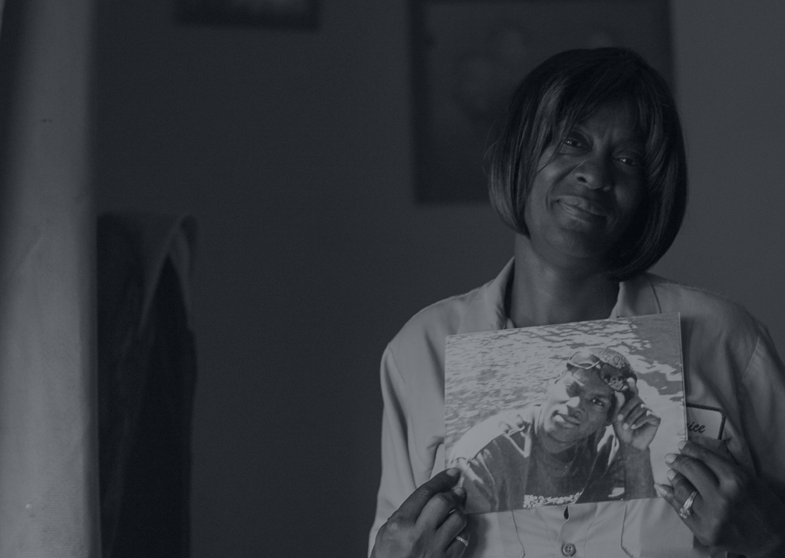
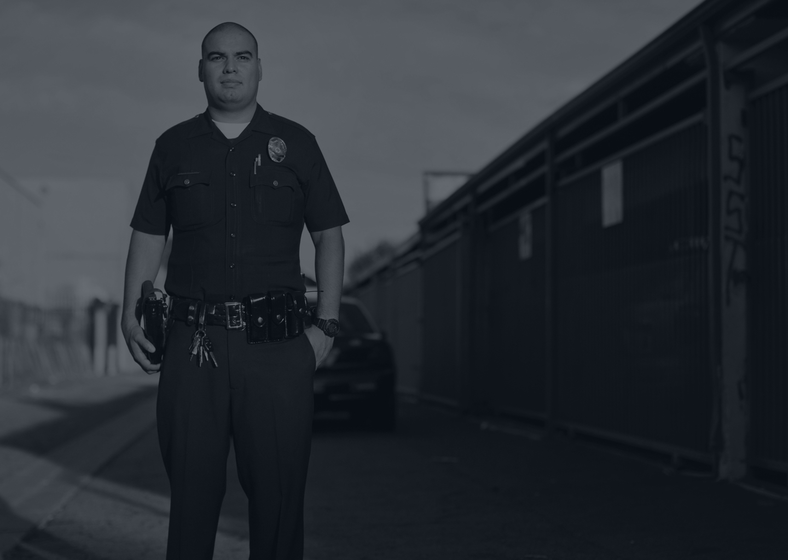
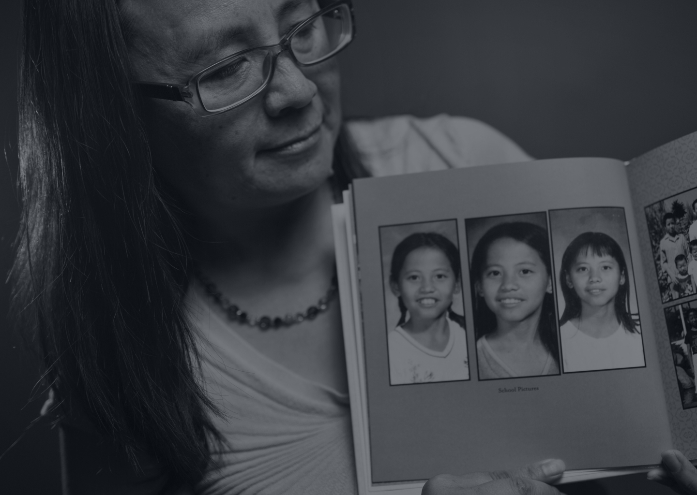
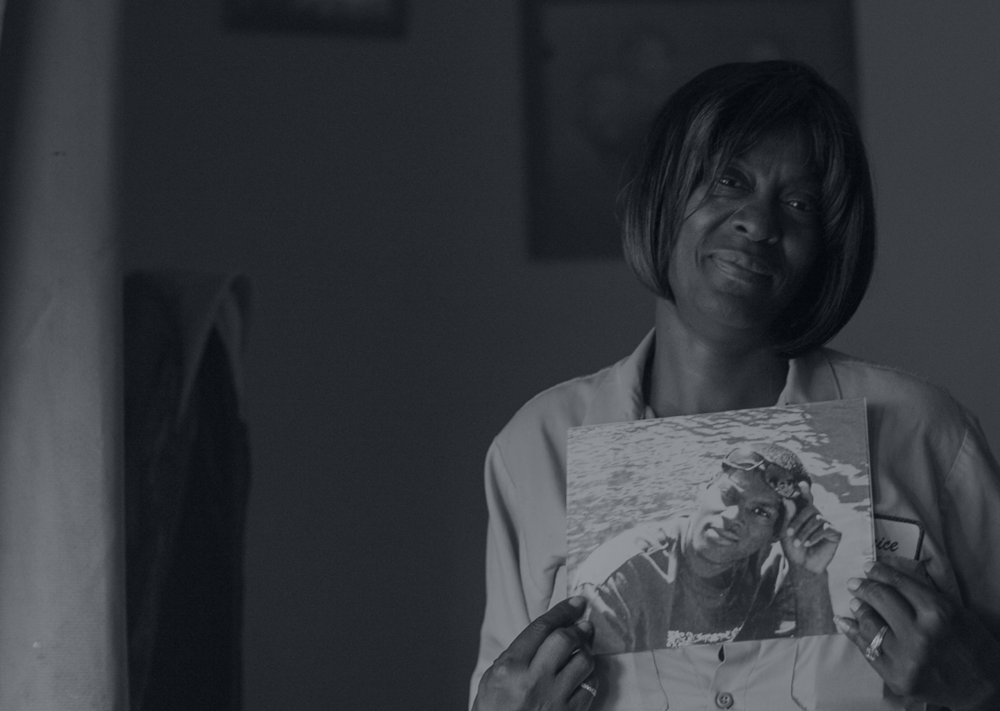
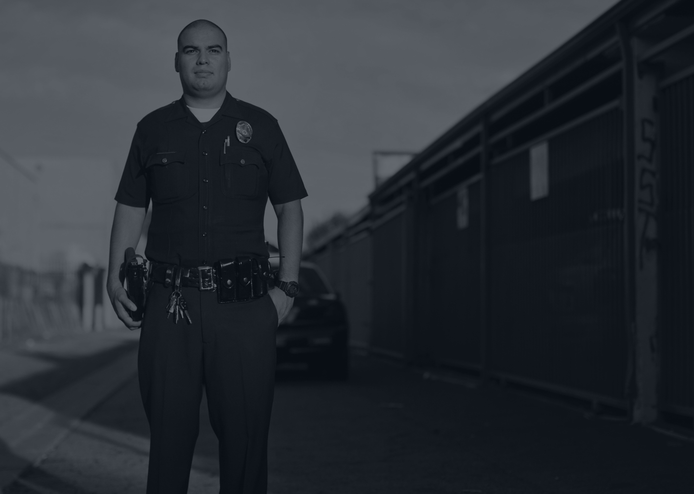
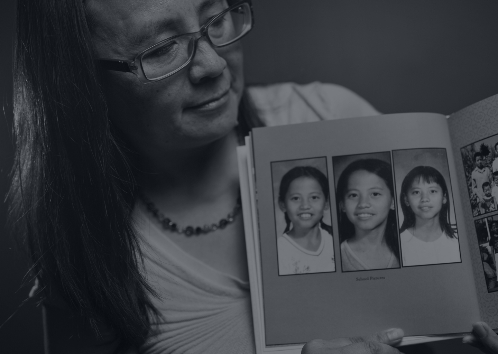

Between Jan. 1, 2010 and Dec. 31, 2014, Los Angeles County district attorney records show at least 375 people were shot by on-duty officers.
The last time an on-duty officer was charged for shooting a civilian in Los Angeles County was in September 2000.
LAPD Officer Ronald Orosco shot an unarmed black man during an altercation following a traffic stop.
Prosecutors charged him with assault.
In a plea deal, he was convicted of one count of shooting at an occupied motor vehicle and sentenced to five years in state prison.
According to KPCC's analysis of district attorney records, one in four people shot by officers were unarmed.
Of those 266 people who were armed, two-thirds had a firearm and 57 shot at police.
In 320 of the shootings reviewed by KPCC, officers did not try less lethal weapons before using deadly force.
Law enforcement officers’ disciplinary records are secret under state law, so it’s impossible for the public to know how often officers and deputies in Los Angeles are disciplined or fired for shooting — even when people are unarmed.
KPCC’s analysis found officers shot 148 people who dropped their hands out of sight or “reached for” a waistband or their pants. Of those, 47 were unarmed.
Of the 279 people shot because they were said to be ignoring officer commands, 120 people showed signs of mental illness or impairment from drugs or alcohol, KPCC’s analysis found.
Officers shot 154 people in the act of fleeing, or after a pursuit.
Officers said they shot 20 people who were unarmed because they feared the person was trying to hit them with a vehicle.
Police trainees are drilled on how to read dangerous situations in “force simulator” training.
But most law enforcement officers only receive between six and 10 hours of training on how to deal with the mentally ill.
On June 16, 2010, a Los Angeles sheriff’s deputy investigating a 911 call of “shots fired” shot and killed Dexter Luckett.
Instead of putting his hands on the patrol car, Luckett set his beer on the hood and allegedly dropped his left hand toward his waistband.
He was unarmed.
“I mean, I would accept it if they said it was accidental,” said Luckett's mother Janice Johnson. “But then they twist it and say his hand dropped, you know, like he was reaching for something.”
A KPCC review of medical examiner records over the past five years found law enforcement officers in Los Angeles County fatally shot black people at triple the rate of whites and Latinos.
In December 2012, LAPD Officer Eric Andrew Avendano faced a man holding a knife to his girlfriend’s bloody neck in an alley in Van Nuys.
Avendano and his partner yelled for Jeovany Mendoza to drop the knife. He refused and threatened to kill her.
Avendano stepped out from behind his patrol car, took aim and fired.
“When I took the shot, the victim let out a scream that I’ve never heard before and they both fell to the ground,” Avendano recalled.
“I didn’t know if I hit the suspect or the victim.”
He hit his target: The bullet had travelled through Mendoza’s eye and pierced his brain. He died on the spot.
Last month, Avendano stepped onto a stage where Chief Charlie Beck hung the LAPD’s Medal of Valor around his neck.
On January 4, 2012, four L.A. County sheriff’s deputies responded to a call from a mental health and counseling facility in Rosemead.
Jazmyne Eng, a 40 year-old patient, was inside the lobby, refusing to leave and holding a small, rounded hammer.
A schizophrenic, Eng was off her medication and paranoid.
Deputies were already armed with a Taser and gun when they approached Eng and told her to give up the hammer.
Instead, they said she “charged” towards them, leaving them no choice but to shoot.
“She was killed for being scared,” her sister Nancy Eng said.
The county paid Eng’s family $1.85 million to settle a wrongful death claim.
KPCC analyzed summaries of officer-involved shootings by the Los Angeles County district attorney from 2010-2014. Explore the data by applying different filters.
Explore the data KPCC gathered for this series, or read the first in-depth feature.